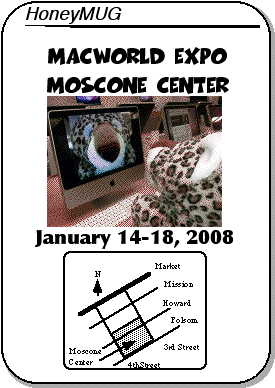

MacWorld Expo 2008 Meeting Notice

2007 MUG / Apple highlights
Mike, Tracy, Dick, and Alex attended MWSF 2007, where Apple introduced two non-Mac products - the AppleTV and the iPhone. The iPhone combines a GSM cell phone, an iPod music player, and an Internet browser all in a small, handheld device. However, the iPhone would not be shipping until the end of June, and only two iPhones under glass were shown to Expo attendees.
For the first time as CEO, Steve Jobs put out four public letters - the first one discussed Apple's desire to eliminate Digital Rights Management (DRM) from music tracks. Initially, the RIAA monopolists opposed the idea; by the end of the year, DRM-free music became widely available at the iTunes music store, amazon.com, and even from the music labels themselves.
The second of Jobs' public letters had to do with Apples' compliance with environmentally friendly "green" standards, including RoHS and recycling. Overall, Apple is doing very well, but as a very visible public company with expectations to be better than the competition, it gets more than its share of criticism from organizations like Greenpeace and the Silicon Valley Toxics Coalition.
The third and fourth public letters were a response to Apple's missteps with the iPhone - one related to a $200 price drop and the other after the botched iPhone 1.1.1 software update. Jobs finally relented to public pressure and announced the future availability of an iPhone software development kit (SDK). A few years from now, we may look on this as a case of the community saving Apple - without third party development from Macintosh-oriented developers, the iPhone runs the risk of being surpassed by more open mobile platfroms.
The rest of the year for Apple consisted of minor and major product announcements on a monthly basis, keeping Apple in the news and helping the stock reach new highs (above $180 per share) and also increasing market share to almost double digits (currently at 8.8% in October).
- Macbook and Macbook Pro were updated in May and November, no major changes to industrial design, just CPU speed bumps and improved wireless performance.
- June 29 - iPhone released to much hype. In the following months, it was hacked, unhacked, and sometimes bricked, as Apple and hackers continued their cat-and-mouse game at the expense of consumers. In November, the iPhone will be made available in the UK and France, with the rest of Europe following in early 2008.
- Aluminum-encased iMacs were announced in August. The 17" model was discontinued and only 20" and 24" screens are available. New keyboards were introduced to match the new iMac style.
- The iPod line was overhauled in September. All iPods except the Shuffle were refreshed and the iPod Touch was introduced.
- MacOS X 10.5 Leopard was released on October 26 and Apple sold two million copies in the first weekend.
In contrast with Apple's rising fortunes and increased market share, local Mac events in Southern California disappeared. The MacGathering was cancelled due to a conflict with the WWDC, and the MacFair event at Cerritos College was discontinued, but rights to the event are up for auction on eBay.
This year was not a very active year in terms of ASACMUG members buying Apple products:
- iPhone - Mike and Tracy
- iMac - Matt
On a sad note, this year marks the passing of one of our favorite ASACMUG members. Ron Keating suffered a severe hemorrhage and passed away in August. He only attended two Expos, but he was always up to date with the latest news and was an informed and entertaining presence whenever he was around. He will be missed by all of us.
Happy Holidays to all,
Alex
Vice President Emeritus
The Meeting
As usual, we will be having our regular lunch/dinner get-togethers at Macworld. The lunch meetings will occur during show hours and dinner schedules will be arranged during lunch that day.The meeting times are
* January 16, 2008 between 1:00-1:15pm
* January 17, 2008 between 1:00-1:15pm
* January 18, 2008 TBD
If you get lost, give ASACMUG a call:
Alex Morando seven-one-four--four-eight-eight--fifty-four-ninety-three
Mike Quan three-one-zero--four-six-three-twenty-seven-oh-eight
To avoid confusion in the past with the ASCII-rendered location of the meeting place, we now have a NEW meeting place, on the NorthEast corner closer to the conference ballrooms. The picture is attached below; the meeting location is marked with a yellow circle and will be moved inside (opposite the doors and windows) in the event of rain. For reference, the OLD meeting location is noted by a black circle.